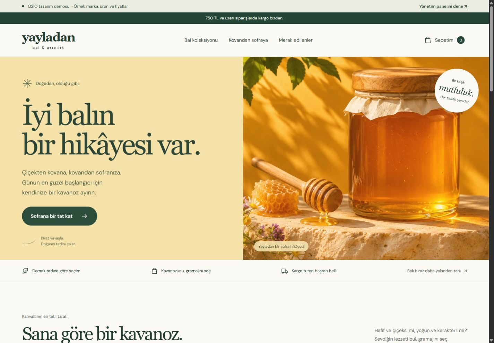
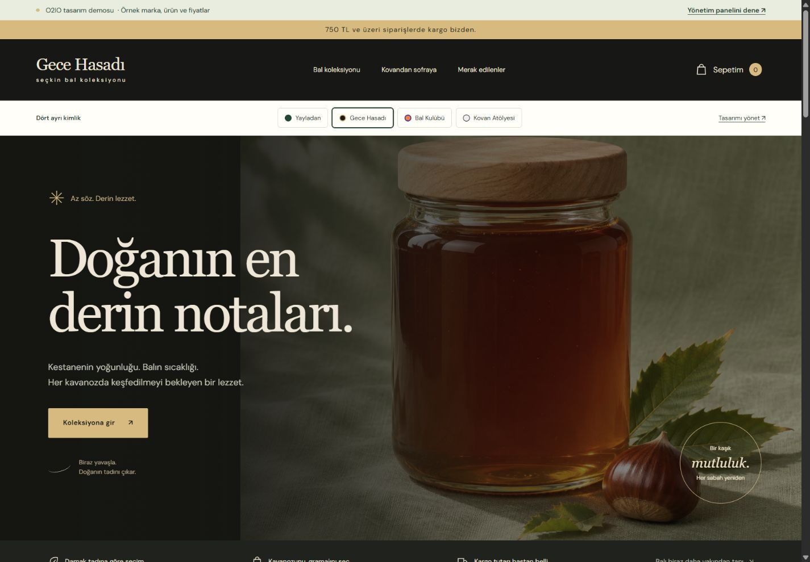
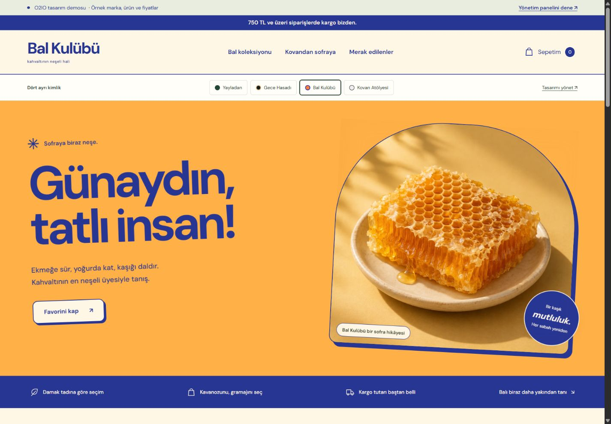
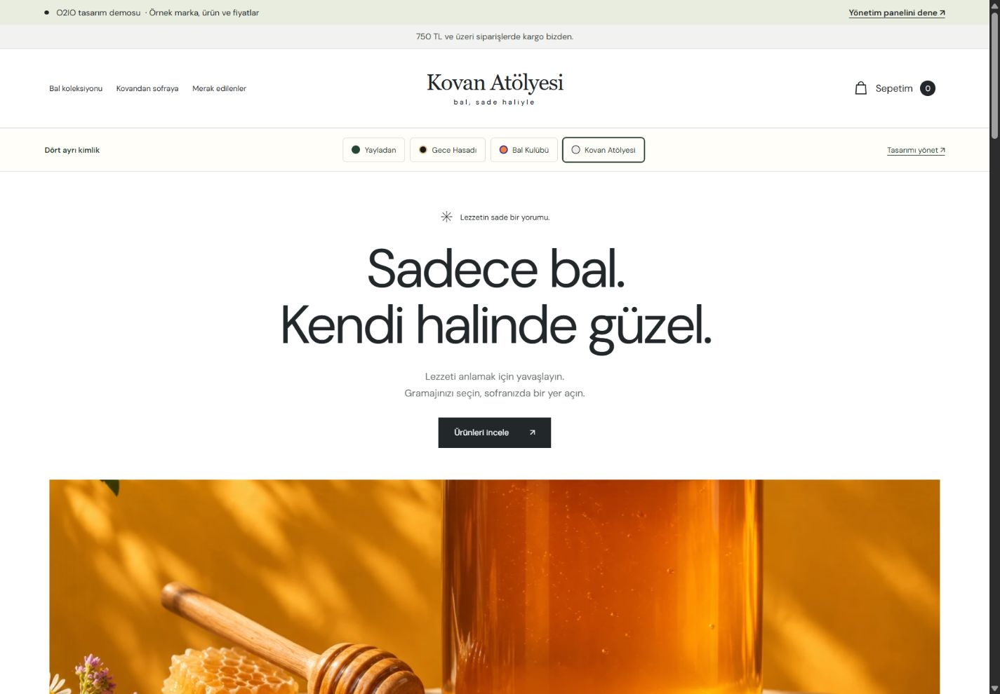

Canlı demoyu aç ↗Yayladan
Doğal & sıcakBal sarısı, orman yeşili ve sıcak fotoğraflar. Doğal ürün markasına samimi bir sofra hikâyesi.
Bu tasarımı deneyin ↗Bal ve doğal ürün satışınız için dört ayrı tasarım yönü hazırladık. Beğendiğiniz görünümü seçin; ürünleri, alışveriş akışını ve mağaza yönetimini kendiniz deneyin.
İsimler ve görseller tasarım örneğidir. Seçtiğiniz yön kendi markanıza uyarlanır.
Her seçenek ayrı bir görsel dil sunuyor.
Canlı demoda ürünlere tıklayabilir, gramaj seçebilir ve sepeti deneyebilirsiniz.

Canlı demoyu aç ↗Bal sarısı, orman yeşili ve sıcak fotoğraflar. Doğal ürün markasına samimi bir sofra hikâyesi.
Bu tasarımı deneyin ↗
Canlı demoyu aç ↗Koyu zemin, altın tonları ve büyük ürün sahneleri. Daha seçkin ve güçlü bir marka hissi.
Bu tasarımı deneyin ↗
Canlı demoyu aç ↗Canlı turuncu ve kobalt, büyük harfler ve hareketli bir düzen. Daha genç, enerjik bir alışveriş deneyimi.
Bu tasarımı deneyin ↗
Canlı demoyu aç ↗Beyaz alan, sade tipografi ve düzenli ürün galerisi. Ürünü öne çıkaran sakin bir mağaza.
Bu tasarımı deneyin ↗Ürünleriniz değiştiğinde, yeni bir gramaj eklemek veya kampanya yapmak istediğinizde panelden nasıl ilerleyeceğinizi deneyebilirsiniz.
Yönetim panelini deneyin ↗Ürün adı, görsel, açıklama, seçenek bazında fiyat, ürün kodu, stok ve görünürlük.
Tema, marka adı, başlıklar, sayfa görselleri, bölüm görünürlükleri ve sık sorulan sorular.
İndirim kodları, kargo koşulları, sipariş durumu, takip numarası ve hazırlık notları.
Ürüne bağlı örnek analiz kartları. Gerçek kullanımda işletmenizin doğrulanmış ürün bilgileriyle hazırlanır.
Ürünü ve gramajını seçip sepete ekleyin.
İsterseniz BAL10 koduyla indirim hesabını da deneyin.
Siparişi, güncellenen stoğu ve düzenleme alanlarını inceleyin.
Renkleri, yazıları, görselleri veya sayfa düzenini revize edebiliriz. Aklınızdaki ek özellikleri de paylaşabilirsiniz; kapsamını ve uygulanışını birlikte netleştiririz.
Beğendiğiniz bir site, ekran görüntüsü ya da farklı bir tasarım örneği varsa gönderebilirsiniz. Kendi markanıza ve ürünlerinize uygun bir sonuca ulaşalım.
Tasarım ve isteklerinizi paylaşın ↗